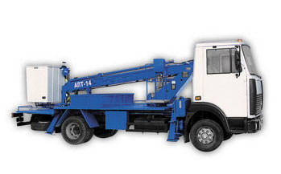
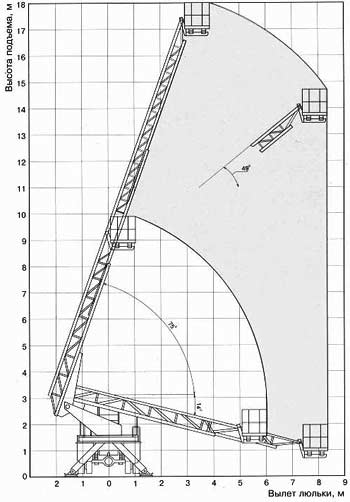

КАТАЛОГ ТЕХНИКИ
Автовышки |
|
Автовышки новые и б/у.  Автоподъемник изготавливается согласно техническим условиям ТУ У34.1-00240106-024:2006. Автоподъемник изготавливается в климатическом исполнении У, категории размещения 1 по ГОСТ 15150 для работы при температурах окружающего воздуха от 233К (минус 40°С) до 313К (плюс 40°С) и скорости ветра не более 10 м/с на высоте до 10 м. Автоподъемник состоит из опорной рамы с 4-мя выдвижными опорами, платформы, подъемно-поворотного устройства, комплекта колен с люлькой, установленной на фарфоровых изоляторах, гидро и электрооборудования. Опорная рама, сваренная из стальных гнутых профилей, воспринимает все нагрузки, возникающие при работе изделия, и тем самым разгружает раму шасси. Выносные опоры, каждая из которых имеет отдельное управление, придают автоподъемнику необходимую устойчивость.
|
||